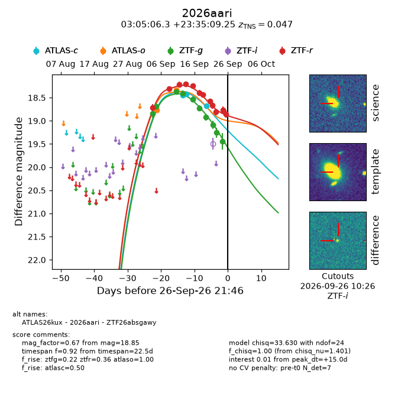
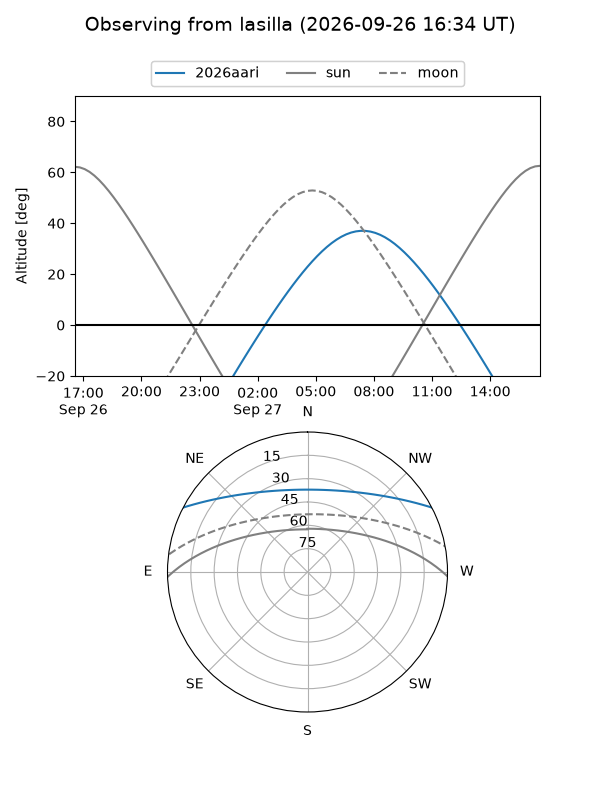
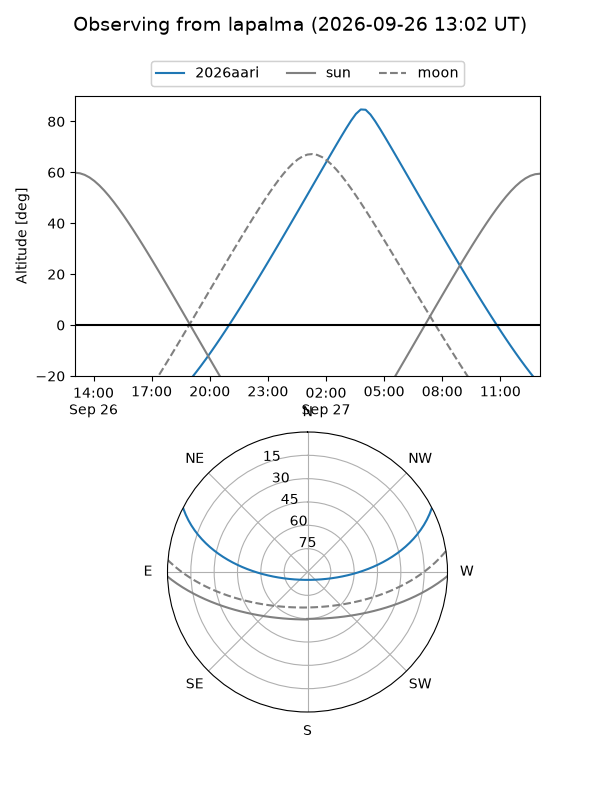
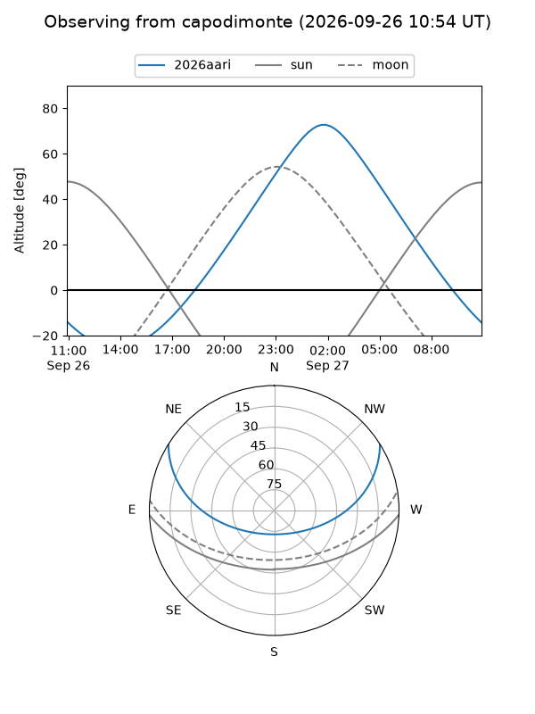
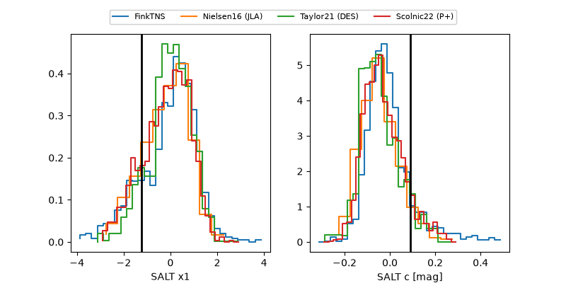

2026aari
Target 2026aari at 2026-09-26 21:48
Aliases and brokers:
FINK-ZTF: ztf.fink-portal.org/ZTF26absgawy
Lasair-ZTF: lasair-ztf.lsst.ac.uk/objects/ZTF26absgawy
ALeRCE-ZTF: alerce.online/object/ZTF26absgawy
YSE-PZ: ziggy.ucolick.org/yse/transient_detail/2026aari
TNS name: wis-tns.org/object/2026aari
Direct TNS query: direct search
alt names
ZTF26absgawy (ztf,fink_ztf)
2026aari (tns,yse)
ATLAS26kux (atlas)
Coordinates:
equatorial (ra, dec) = 46.2761,+23.58590
equatorial (HMS+DMS) = 03:05:06.27,+23:35:09.25
galactic (l, b) = (158.5345,-29.89119)
Flags:
TNS type: SN Ia
TNS redshift: 0.0470
peak dt: +15.0
Photometry:
last atlasc=18.67, atlaso=18.33, ztfg=19.44, ztfr=18.85
3 atlasc, 2 atlaso, 10 ztfg, 12 ztfr detections
Lightcurve

Visibility



Additional plots
